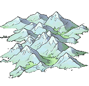

Oraș
De aici minerii tăi extrag minereul de fier, vital armelor şi clădirilor. Prin creşterea nivelului minei, creşte cantitatea de fier extras pe oră. 
Producţie curentă:
3 pe oră
Producţie la nivel 1:
7 pe oră